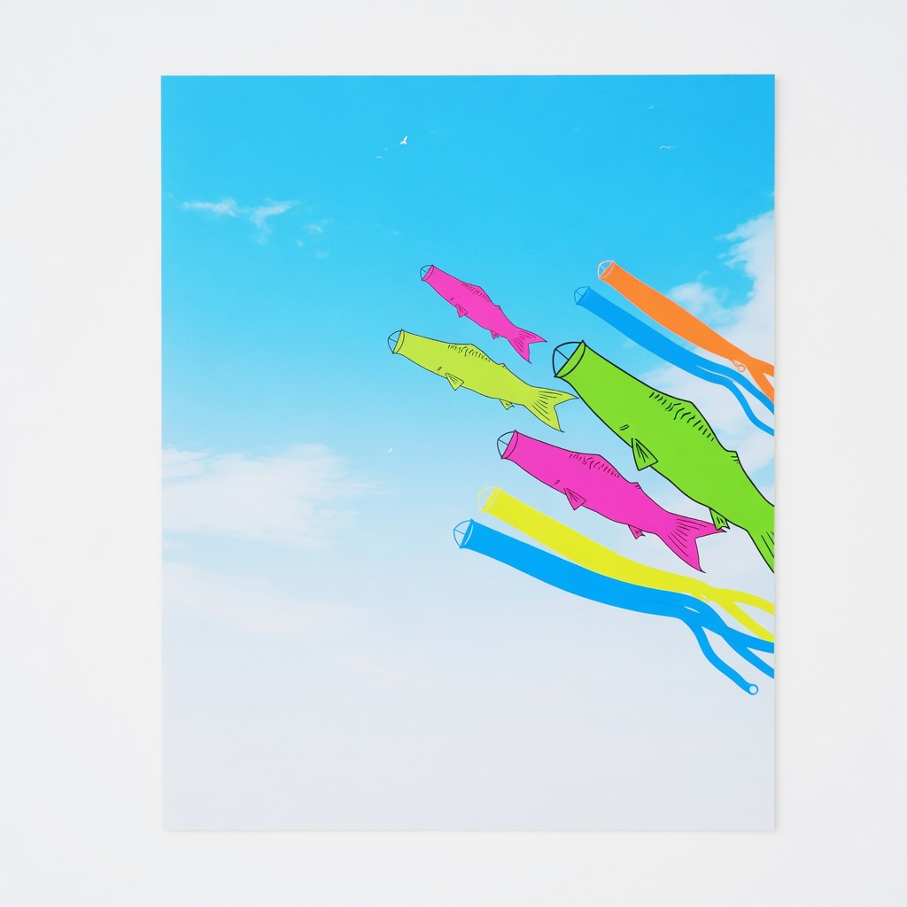
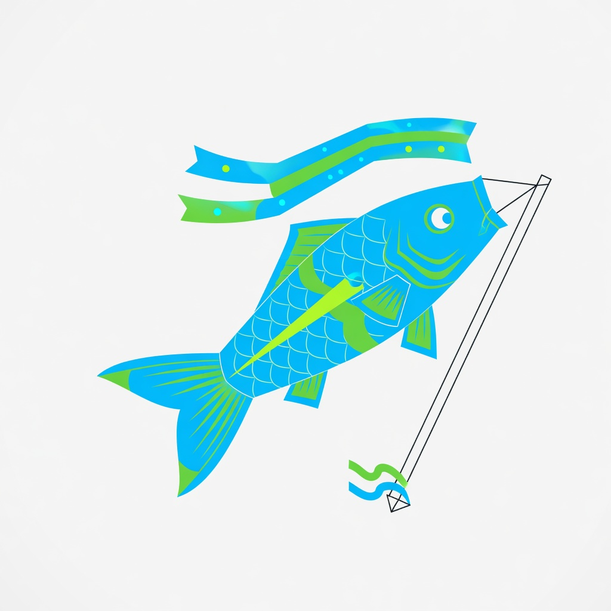
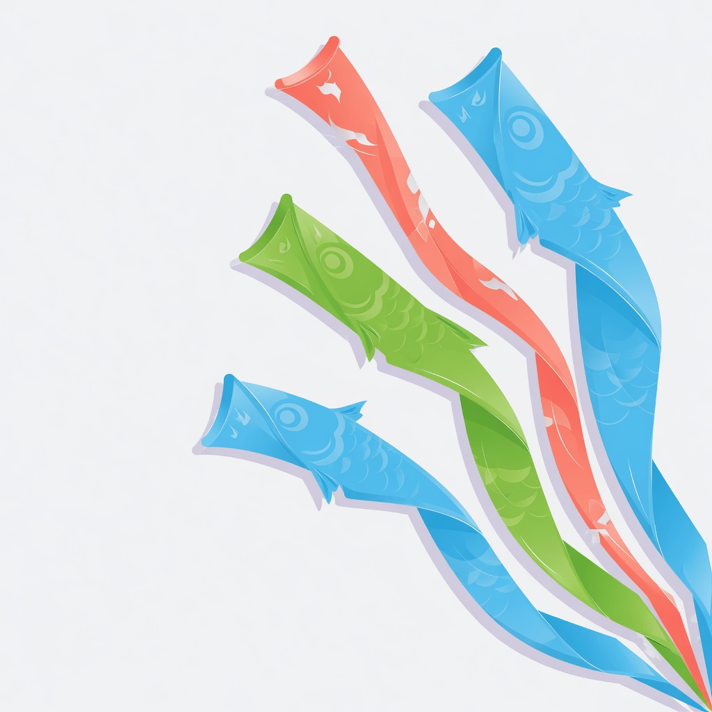

SORYU turns product telemetry into upward momentum — real-time dashboards that show you what's climbing, what's stalling, and where to push next.
Capture every signal, see it in context, and act before the moment passes. SORYU gives you the full upstream view of your product.
Every event flows live into your dashboards. No batch delays, no stale data — see what's happening the moment it happens, with sub-second latency.
Automatic anomaly detection surfaces what's rising and what's falling. SORYU flags the metrics that matter, so you never miss a turning point.
Set thresholds, trigger alerts, and launch workflows directly from the dashboard. Turn insight into action without leaving the current.

SORYU's streaming pipeline ingests millions of events per minute and renders them into live dashboards with no perceptible delay. Your team sees the same truth, at the same time.

SORYU's anomaly engine runs statistical models on every metric stream, continuously. When something deviates from the expected current — a spike, a dip, a regime change — you're the first to know.
Free for 30 days. No credit card required. Connect your first data source in under five minutes and see your dashboards come alive.